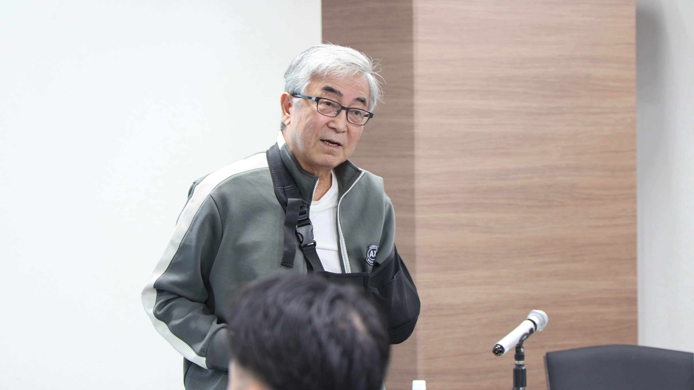
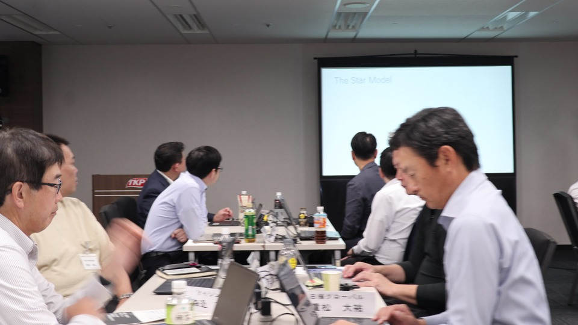

「日本のリーダーには、本当にいい人がたくさんいる。だからこそ、強くなってほしい」。八木洋介氏の講義は、静かな励ましと鋭い問いから始まった。ここでいう強さは、声の大きさや立場の強さではない。自分は何を実現したいのか。そのために、何を判断の拠り所とするのか。答えを自分の内側に持ち、変革の先頭に立つ力である。
FOUR PERSPECTIVES
志
自分を駆り立てるものを持つ
軸
判断と行動の原理原則を言葉にする
変革
一人で始め、周囲を巻き込む
学習
未来を見ながら学び続ける
PERSPECTIVE 01
他者を率いる前に、
自分をリードできるか
上から求められたことをこなすだけでは、リーダーにはなれない。八木氏は、魅力あるリーダーには「自分がこれを実現したい」という思いがあると語る。会社の中で担う役割を、自分の人生や社会に対する問題意識とどう結びつけるのか。そこに、自分を動かす力が生まれる。
大きな企業に身を置くからこそ、「何のためにこの会社にいるのか」「ここで何を実現したいのか」を自分の言葉で持つ。その会社を舞台として、人生をかけて取り組みたいことまで見えてくれば、行動の質はさらに変わる。リーダーシップは、役職ではなく、自らを駆り立てる志から始まる。
自分をリードできなければ、
人をリードすることはできない。

PERSPECTIVE 02
迷ったときに戻れる、
判断と行動の軸を持つ
志があっても、日々の判断は一つひとつ異なる。そこで必要になるのが、自分は何を大切にするのかという価値観や原理原則だ。八木氏は、人事の仕事において「人の活力を引き出す」ことを判断軸にしてきた経験を紹介した。
制度で一律に縛るのではなく、目的と価値観を明確にし、現場のマネージャーが一人ひとりと向き合う。簡単なルールに逃げず、手間のかかる対話を引き受ける。その選択を支えるのが、言語化された軸である。何を守り、どこを変えるのか。軸があれば、状況が変わっても判断の一貫性を失いにくい。
PERSPECTIVE 03
変革は一人で始められる。
だが、一人では起こせない。
人は変化に直面すると、まず危険を感じ、逃げるか戦うかという反応をしやすい。だから、変革を多数決から始めても前へ進みにくい。八木氏は、未来を考え「何が正しいか」を見定めた人が、抵抗を受け止めながら最初の一歩を踏み出す必要があると話した。
ただし、押し切るだけでは組織は動かない。最初は一人でも、目的を伝え、考えるための材料を示し、仲間を増やしていく。一定数が動き始めれば、やがて「変わらないこと」のほうがリスクになる。変革のリーダーに求められるのは、始める覚悟と、巻き込む力の両方である。
変革は、一人でスタートできる。
一人で起こすことはできない。
PERSPECTIVE 04
経験を言葉にすることで、
信念は輪郭を持つ
八木氏自身も、若い頃の経験や、自分の生き方を決めた言葉を振り返った。経験は、ただ過去に起きた出来事のままでは、日々の判断に十分には生かされない。何が自分を動かしたのか、なぜその選択をしたのかを言葉にすることで、曖昧だった価値観が信念へ変わっていく。
言語化は、過去を整えるためだけではない。自分が以前に学んだことを蓄積し、次の判断へつなぐための手段でもある。より強いリーダーへ成長するために、自分の経験を振り返り、繰り返し言葉を更新する。その営み自体が、継続的な学習になる。
WORKSHOP
自分史をひらき、
互いの可能性を見つける
後半、参加者はライフラインチャートを使い、幼少期から現在までの経験を振り返った。成功や挫折だけでなく、人との出会い、環境の変化、繰り返し現れる行動の癖をたどり、自分の価値観がどのようにつくられたのかを言葉にしていく。
発表後の対話では、本人が弱さだと捉えていた経験に、周囲が別の意味を見いだす場面もあった。「逃げていたのかもしれない」という振り返りに対し、実力を認めながら、次は自ら限界へ挑む時ではないかと問い返す。別の参加者には、本人より先に周囲が可能性を見つけてきた歩みが映し出された。
自分一人で振り返るだけでは見えない強みや課題が、他者の言葉によって立ち上がる。講義で得た概念を自分の人生へ引き寄せ、次にどのようなリーダーとして行動するのかを考える時間となった。

FROM SELF TO ORGANIZATION
自分の志を言葉にし、
組織の変革へつなぐ。
自分を駆り立てる志を持つ。判断と行動の軸を言葉にする。未来を見て学び続け、最初の一歩を踏み出す。そして、異なる人を巻き込みながら変革を前へ進める。八木氏の講義は、リーダーシップを抽象的な理想ではなく、自分自身の生き方と日々の行動へ引き戻す時間だった。
第4単位の開催レポートを読む →